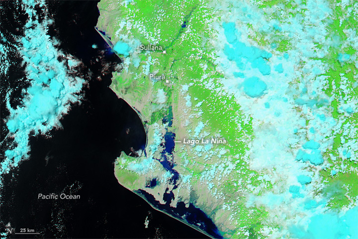
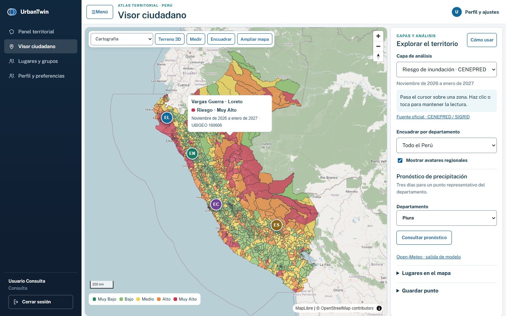

Riesgo distrital
Categorías de riesgo por inundaciones y movimientos en masa publicadas por CENEPRED.
Escenario oficialAtlas territorial del Perú
Explora escenarios de riesgo por distrito, registros de lluvia y las huellas de las inundaciones de Piura en 2017. UrbanTwin reúne estas fuentes para apoyar la consulta y el análisis preventivo.
Conocer el visor
Categorías de riesgo por inundaciones y movimientos en masa publicadas por CENEPRED.
Escenario oficialPrecipitación estimada por CHIRPS, expresada en milímetros y organizada por intervalos en el mapa.
Datos CHIRPSÁreas observadas por Copernicus EMS el 26 y el 30 de marzo de 2017.
Activación EMSR199Elige un departamento, una provincia o un punto en el mapa. El visor enfoca el lugar y muestra la categoría, el período y la fuente de la capa activa.
Visor en línea en preparación. La imagen es una captura de la aplicación local.

Consulta el modelo de datos, cómo se importan las capas y los pasos para ejecutar UrbanTwin.